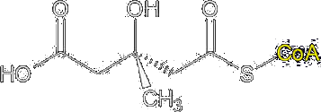
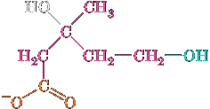
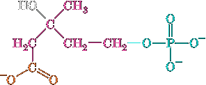
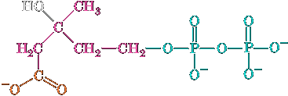
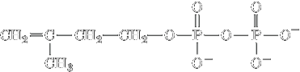
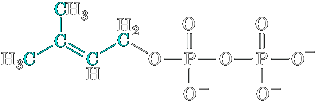

Cholesterol Metabolism
Cholesterol is a vital constituent of cell membranes and the precursor of steroid hormones and bile acids. It is clearly essential to life, yet its deposition in arteries is associated with cardiovascular disease and stroke, two leading causes of death in humans. In a healthy organism, an intricate balance is maintained between the biosynthesis, utilization, and transport of cholesterol, keeping its harmful deposition to a minimum. In this section, we study the pathways of cholesterol biosynthesis and transport and how they are controlled.
Cholesterol Is Synthesized from Acetyl-CoA
Cholesterol biosynthesis follows a lengthy pathway, first outlined by Konrad Bloch, in which acetate (from acetyl-CoA) is converted to isoprene units that have the carbon skeleton of isoprene:

(2-methyl-1,3-butadiene)
The isoprene units then condense to form a linear molecule with 30 carbons that cyclizes to form the four-ring structure of cholesterol.
The CoA thioester group of HMG-CoA is reduced to an alcohol in an NADPH-dependent four-electron reduction catalyzed by HMG-CoA reductase, yielding mevalonate, a C6 compound. This is the rate-determining step of cholesterol biosynthesis.
HMG-CoA HMG-CoA reductase
⟶
↷
2NADPH 2NADP+ CoAMevanolate The new OH group is phosphorylated by mevalonate-5-phosphotrans-ferase.
Mevanolate mevalonate-5-phosphotransferase
⟶
↷
ATP ADP+Phosphomevalonate The phosphate group is converted to a pyrophosphate by phospho-mevalonate kinase.
Phosphomevalonate phosphomevalonate kinase
⟶
↷
ATP ADP+5-Pyrophosphomevalonate The molecule undergoes an ATP-dependent decarboxylation reaction catalyzed by pyrophosphomevalonate decarboxylase to yield isopentenyl pyrophosphate:
5-Pyrophosphomevalonate pyrophospho- mevalonate decarboxylase
⟶Isopentenyl pyrophosphate + Pi +ADP+ + CO2
Squalene Is Formed by the Condensation of Six Isoprene Units
Isopentenyl pyrophosphate is converted to dimethylallyl pyrophosphate by isopentenyl pyrophosphate isomerase.
| isopentenyl pyrophosphate | isopentenyl pyrophosphate isomerase ⟶ | Dimethylallyl pyrophosphate |
Four isopentenyl pyrophosphates and two dimethylallyl pyrophosphates condense to form the C30 cholesterol precursor squalene in three reactions catalyzed by two enzymes (Fig. 20-37):
Prenyltransferase catalyzes the head-to-tail condensation of dimethylallyl pyrophosphate and isopentenyl pyrophosphate to yield the C10 compound geranyl pyrophosphate.
Prenyltransferase catalyzes a second head-to-tail condensation of geranyl pyrophosphate and isopentenyl pyrophosphate to yield the C15 compound farnesyl pyrophosphate. The prenyltransferase catalyzes an SN1 reaction to form a carbocation intermediate with an ionization–condensation–elimination mechanism: